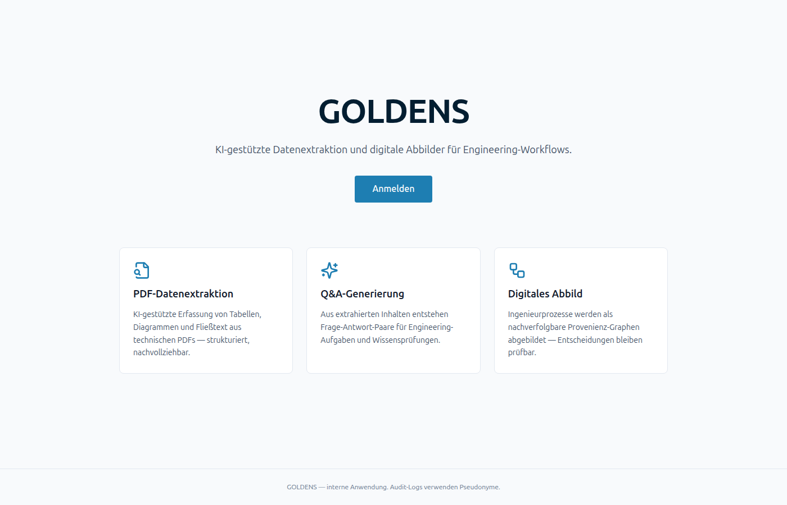
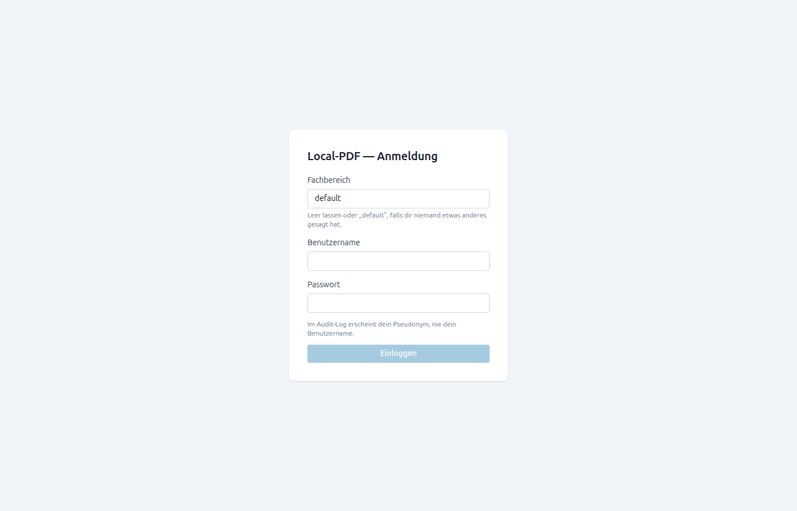
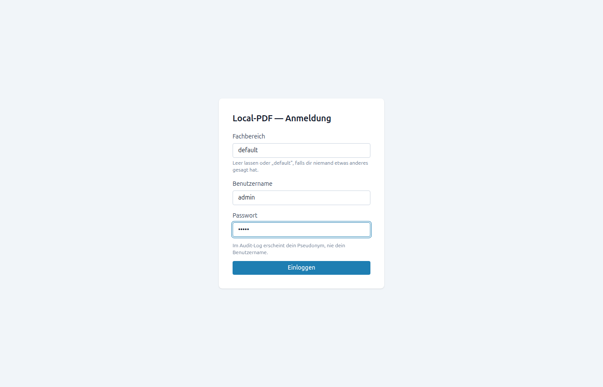
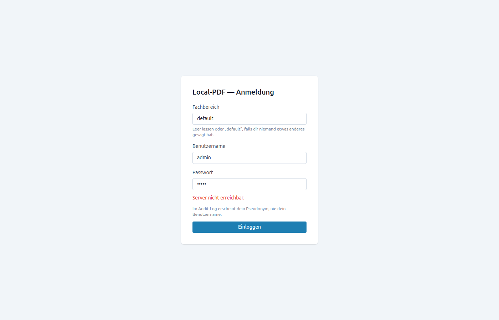

login-and-tenant-admin
baseUrl:
http://127.0.0.1:5173
started:
2026-05-27T05:58:19.393Z
steps:
3
console:
9
network 4xx/5xx:
3
JS errors:
0
⚠
1
failed step(s) ·
3
network 4xx/5xx
01
Open landing → Anmelden
OK
1299 ms

Anmelden CTA
Landing page

Login page
02
Fill credentials
OK
682 ms

Login button
Form pre-submit
03
Submit + land on inbox
FAILED
10297 ms

FAILURE: page.waitForURL: Timeout 10000ms exceeded. =========================== logs =========================== waiting for navigation until "load" ============================================================